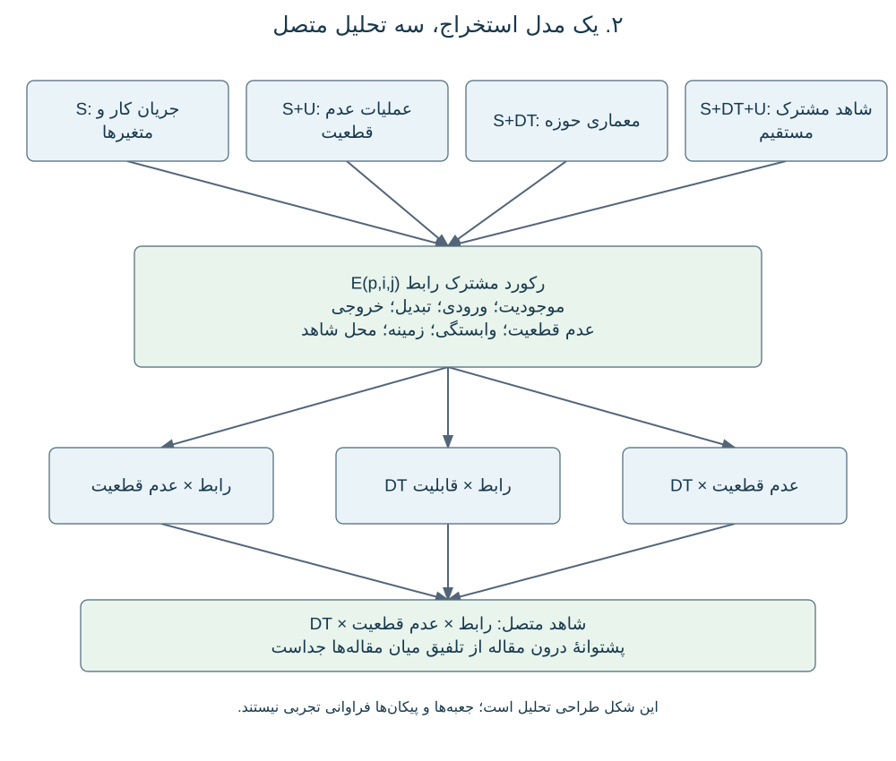

شکل مکمل S2. فراوانی بازشماریشدهٔ روشها در همان ۱۷ مقاله؛ طبقات گستردهٔ قدیمی حفظ شدهاند.
مجموعهٔ مرزهای مجاور B={B12,B23,B34,B45} بهترتیب متناظر با S1→S2، S2→S3، S3→S4 و S4→S5 است. O5، یعنی سایر ورودیها به S5، خارج از این مجموعه نگه داشته میشود. مقالهٔ دارای خروجی S5 خودکار به B45 نسبت داده نمیشود؛ ورودی بازیابیِ بالادست باید مستند باشد. واحد تحلیل موجود، زوج یکتای مقاله–زمینه a=(p,b) است، نه مطالعهٔ مستقل یا جریان فیزیکی مصالح. سناریوهای مختلف همان زوج دوباره شمرده نمیشوند. استخراج سناریومحور به واحد و مخرج جدید نیاز دارد.
در فرهنگ کدگذاری آرشیوشده، هر ارزیابی یک وضعیت اصلی c(a) دارد: Q، بحث یا مرور؛ N، انتقال پاییندست نشان داده نشده؛ R، ورودی آمادهٔ انتشار؛ S، مقایسهٔ حساسیت یا بازنمایی؛ P، انتقال جزئی یا ناقص مستندشده؛ و E، خروجی کمّی برای ورودیهای نامطمئن منتخب. این دستهها رتبهٔ بلوغ نیستند. بهویژه E انتقال همهٔ عدم قطعیتها و وابستگیهای بالادست را ثابت نمیکند. کد R این جدول با R مربوط به قابلیت گزارششدهٔ DT متفاوت است.
در D01، مقدار n(b,c) برابر تعداد ارزیابیهایی است که هم مرز b و هم وضعیت c دارند. مجموع وضعیتهای هر مرز برابر N(b) و مجموع مرزها برابر تعداد کل زوجهای مقاله–زمینه است. پهنای نوار متناسب با n(b,c) است و توزیع ارزیابیها را نشان میدهد، نه مقدار عدم قطعیت منتقلشده. هر چهار مرز، حتی با مقدار صفر، در جدول خروجی باقی میمانند. صفر B34 یعنی در این استخراج منتخب ارزیابی شمارششدهای وجود ندارد؛ نه اینکه پژوهش مرتبط وجود ندارد. چند زمینهٔ یک مقاله مشاهدات مستقل نیستند و اتصال مقالههای مختلف، مسیر سرتاسری S1–S5 را اثبات نمیکند.
برای داوری انتقال واقعی باید متغیر نامطمئن بالادست X، بازنمایی U(X)، نگاشت مستند Y=f(X,theta) و استفادهٔ پاییندست از U(Y) شناسایی شوند. در انتشار تصادفی، نمونهها، توزیع مشترک یا روش معادل برخورد با وابستگی باید در عبور از f قابل ردیابی باشند؛ نمودار حساسیت بهتنهایی چنین شاهدی نیست. بهروزرسانی زمانی جدا ثبت میشود که مشاهدهٔ جدید، توزیع وضعیت یا پارامتر استنباطشده را تغییر دهد. این نمادگذاری بیانگر چیزی است که در مقالهها بررسی میکنیم؛ مرور حاضر شبیهسازی موجودی یا بهروزرسانی بیزی جدید اجرا نمیکند. بازهٔ Y بدون اتصال مستند به X، شاهد کمّیسازی عدم قطعیت خروجی است، اما لزوماً پیوستگی سرتاسری نیست (Michiels and Geeraerd, 2020; Kapteyn et al., 2021).
برای مقاله p، مرحله s و قابلیت f، مقدار x(p,s,f) فقط زمانی یک است که کد منبع، وضعیت R یا قابلیت گزارششده داشته باشد. C پشتوانهٔ مفهومی، پیشنهادی یا مروری و NR نبود کد مثبت ثبتشده است. R اعتبارسنجی مستقل یا عملیاتیبودن کل دوقلو را ثابت نمیکند. وزن یال شبکهٔ دوبخشی w(s,f) مجموع x در مقالههاست. تعداد گره مرحله از اجتماع یکتای مقالههای پشتیبان قابلیتها و تعداد گره قابلیت از اجتماع مقالههای پشتیبان آن در مراحل محاسبه میشود. برچسب تکراری در سلول مقاله–مرحله–قابلیت باید پیش از شمارش ادغام شود.
فقط S1–S5 وارد شبکه میشوند؛ کارکردهای مجاور هزینه، زمانبندی و ساخت با کد X بیرون میمانند. ضخامت یال متناسب با w است. در کد رسم آرشیوشده، مساحت گره مرحله 220+55N(s) و مساحت گره قابلیت 170+45N(f) پوینت مربع است؛ بنابراین اندازهٔ گره رابطهٔ خطی دارای عرض از مبدأ دارد و تناسب مستقیم مساحت نیست. این شبکه، حضور قابلیت را بدون جهت بینمرحلهای نشان میدهد. حتی اگر مقاله هم S2 و هم S3 داشته باشد، انتقال فقط پس از مستندشدن اتصال ورودی–نگاشت–خروجی ثبت میشود. D02 قابلیتهای نامزد برای بررسی رابط را فراهم میکند و جایگزین تحلیل انتقال نیست.
ممیزی تجمیع، خانههای D01 را از رکورد زمینه، وزنهای D02 را از سلولهای دارای R، عضویتهای D03 را از کد سازوکار و تقاطعهای D04 را از برچسب منبع و روش مستقلاً بازسازی میکند. یکتایی کلید، مجموعهٔ شناسه، توازن مجموعها، مخرج ردیف و هش فایل منبع کنترل میشوند. نسخهٔ موجود، ۲۳ زمینه از ۲۰ مقاله، ۱۶ یال مثبت مرحله–قابلیت، ۹ ترکیب دقیق در ۱۰ رکورد غیرمروری و ۴۶ خانهٔ مثبت در ماتریس ۱۰۰خانهای منبع–روش را بازتولید میکند. اینها شمار زیرمجموعهٔ تحلیل هستند، نه تعداد مطالعات Included در PRISMA.
این کنترل محاسباتی، بازخوانی یا تأیید تفسیر معنایی همهٔ مقالهها نیست. بعضی محلهای شاهد در استخراج آرشیوی به جدول کدگذاری قبلی اشاره دارند و هنوز ارجاع صفحهای به متن اصلی ندارند. این موارد پیش از ارسال مقاله به تکمیل محل شاهد و تطبیق با دفتر صلاحیت فعلی نیاز دارند. پس شکلها از کدگذاری آرشیوی بازتولیدپذیرند، اما بهعنوان سنتز متن کاملِ تازه و نهایی تأیید نشدهاند. موفقیت بازتولید نیز استقلال آماری، توافق ارزیابان یا معناداری را ثابت نمیکند.
مجموعهٔ قدیمی ۱۷ مقالهای از مجموعهٔ ۲۰ مقاله و ۲۳ زمینه جدا نگه داشته شد. هر کد منبع و روش در هر مقاله یک بار شمرده و بر ۱۷ تقسیم شد. پیامدها با نگاشت صریح عبارتهای قدیمی بازسازی شدند و میتوانند در یک مقاله همزمان باشند. شناسههای پشتیبان و درصدها خروجی گرفته شدند. این کنترل بازتولید عددی است، نه قضاوت معنایی جدید. صلاحیت از طریق DOI تطبیق داده شد. منحنیهای پیامد، مثال مصنوعیاند و توزیع استخراجشده نیستند. درصد سازوکارهای DT از ده رکورد غیرمروری و کد مثبت R محاسبه شد. به دلیل نبود استخراج هماهنگ کمیت و شرایط، اندازهٔ عدم قطعیت، سهم واریانس یا کاهش آن تجمیع نشد.
| بلوک | مفاهیم و نمونهٔ کلیدواژه |
| حوزه B | building stock*؛ existing building*؛ built environment؛ material cadastre*؛ resource cadastre* |
| S1 | GeoAI؛ remote sensing؛ computer vision؛ LiDAR؛ point cloud*؛ building geometry؛ building classification |
| S2 | material stock*؛ material inventor*؛ material intensit*؛ material composition؛ building archetype*؛ quantity takeoff |
| S3 | material flow*؛ dynamic stock*؛ stock turnover؛ service life؛ building lifetime*؛ demolition timing؛ material outflow* |
| S4 | reuse؛ recycl*؛ recover*؛ deconstruction؛ urban mining؛ disassembl*؛ secondary material*؛ reverse logistics |
| S5 | life cycle assessment؛ embodied carbon؛ environmental impact*؛ carbon footprint؛ decision support |
| DT | "digital twin" OR "digital twins" |
| U | uncertaint*؛ probabil*؛ stochastic*؛ Bayesian؛ Monte Carlo؛ sensitiv*؛ variabil*؛ calibrat*؛ robust*؛ بازهٔ پیشبینی و اطمینان |

شکل مکمل S1. رکورد مشترک رابط و اتصال شواهد.
شکل مکمل S2. فراوانی بازشماریشدهٔ روشها در همان ۱۷ مقاله؛ طبقات گستردهٔ قدیمی حفظ شدهاند.

شکل مکمل S3. بازسازی برچسبهای پیامد قدیمی با شناسهٔ پشتیبان؛ اینها تغییر واریانس اندازهگیریشده نیستند.

شکل مکمل S4. واژگان مفهومی پیامد؛ منحنیهای مصنوعی نرمالشده و نه دادهٔ مدلهای مرورشده.

شکل مکمل S5. درصد و تعداد درون هر مرز؛ مخرج B34 صفر و درصد آن تعریفنشده است.

شکل مکمل S6. فراوانی سازوکار مثبت در ده رکورد غیرمروری DT عمومی.

شکل مکمل S7. سنتز پیشین از طراحی تا استفاده؛ کلیدهای R در فهرست مبانی مشخص شدهاند و پیکانها مفهومیاند.
.svg)
شکل مکمل S8. واژگان پیکربندی، نه فراوانی تجربی اتصالها؛ اصطلاحات فاقد پشتوانه در شکل اصلی علامت دارند.

شکل مکمل S9. تخصیص کارکرد؛ فعالیتها معادل مراحل جریان مصالح نیستند.
فهرست R مجموعهٔ مبانی مفهومی است و مجموعهٔ نظاممند مستقل و بستهشده نیست. حدود دسترسی هر منبع در فایل مبانی حفظ شده است.
| R1 | Xiong, Guanyu; Li, Haijiang; Gao, Yan. 2025. Cross-domain comparative analysis of digital twins and universalised solutions. Advanced Engineering Informatics. https://doi.org/10.1016/j.aei.2025.103726 |
| R2 | Human, C.; Basson, A. H.; Kruger, K.. 2023. A design framework for a system of digital twins and services. Computers in Industry. https://doi.org/10.1016/j.compind.2022.103796 |
| R3 | Kapteyn, Michael G.; Pretorius, Jacob V. R.; Willcox, Karen E.. 2021. A probabilistic graphical model foundation for enabling predictive digital twins at scale. Nature Computational Science. https://doi.org/10.1038/s43588-021-00069-0 |
| R4 | Ferrari, Alberto; Willcox, Karen. 2024. Digital twins in mechanical and aerospace engineering. Nature Computational Science. https://doi.org/10.1038/s43588-024-00613-8 |
| R5 | Shao, Guodong; Helu, Moneer. 2020. Framework for a Digital Twin in Manufacturing: Scope and Requirements. Manufacturing Letters. https://doi.org/10.1016/j.mfglet.2020.04.004 |
| R6 | Agrawal, Ashwin; Thiel, Robert; Jain, Pooja; Singh, Vishal; Fischer, Martin. 2023. Digital Twin: Where do humans fit in?. Automation in Construction. https://doi.org/10.1016/j.autcon.2023.104749 |
| R7 | Walton, Ryan B.; Ciarallo, Frank W.; Champagne, Lance E.. 2024. A unified digital twin approach incorporating virtual, physical, and prescriptive analytical components to support adaptive real-time decision-making. Computers & Industrial Engineering. https://doi.org/10.1016/j.cie.2024.110241 |
| R8 | Ogunsakin, R.; Mehandjiev, N.; Marin, C. A.. 2023. Towards adaptive digital twins architecture. Computers in Industry. https://doi.org/10.1016/j.compind.2023.103920 |
| R9 | Kerin, Mairi; Hartono, Natalia; Pham, D. T.. 2023. Optimising remanufacturing decision-making using the bees algorithm in product digital twins. Scientific Reports. https://doi.org/10.1038/s41598-023-27631-2 |
| R10 | Chen, Yi-Ping; Suarez, Derick; Tsai, Ying-Kuan; Karkaria, Vispi; Hu, Guanzhong; Chen, Zihan; Guo, Ping; Cao, Jian; Chen, Wei. 2026. Adaptive digital twin of sheet metal forming via proper orthogonal decomposition-based Koopman operator with model predictive control. Journal of Manufacturing Systems. https://doi.org/10.1016/j.jmsy.2026.04.004 |
| R11 | Lugaresi, Giovanni; Dhore, Abdirahman Said; Matta, Andrea. 2026. Joint online validation and parameter calibration within a digital twin framework: an approach based on bootstrap particle filtering. Procedia CIRP. https://doi.org/10.1016/j.procir.2026.03.284 |
| R12 | Bitencourt, Julia; Wooley, Ana; Harris, Gregory. 2025. Verification and validation of digital twins: a systematic literature review for manufacturing applications. International Journal of Production Research. https://doi.org/10.1080/00207543.2024.2357741 |
| R13 | van Beek, Anton; Karkaria, Vispi Nevile; Chen, Wei. 2023. Digital twins for the designs of systems: a perspective. Structural and Multidisciplinary Optimization. https://doi.org/10.1007/s00158-023-03488-x |
| R14 | Kritzinger, Werner; Karner, Matthias; Traar, Georg; Henjes, Jan; Sihn, Wilfried. 2018. Digital Twin in manufacturing: A categorical literature review and classification. IFAC-PapersOnLine. https://doi.org/10.1016/j.ifacol.2018.08.474 |
| R15 | Kosse, Simon; Hagedorn, Philipp; König, Markus. 2025. Semantic Digital Twins in Construction: Developing a modular System Reference Architecture based on Information Containers. Advanced Engineering Informatics. https://doi.org/10.1016/j.aei.2025.103483 |
| R16 | . 2026. Systems of Digital Twins: A Systematic Literature Review and a formal framework. Digital Engineering. https://doi.org/10.1016/j.dte.2026.100100 |